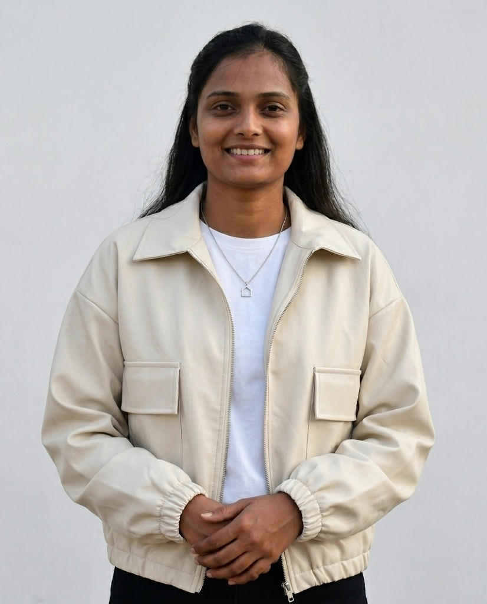
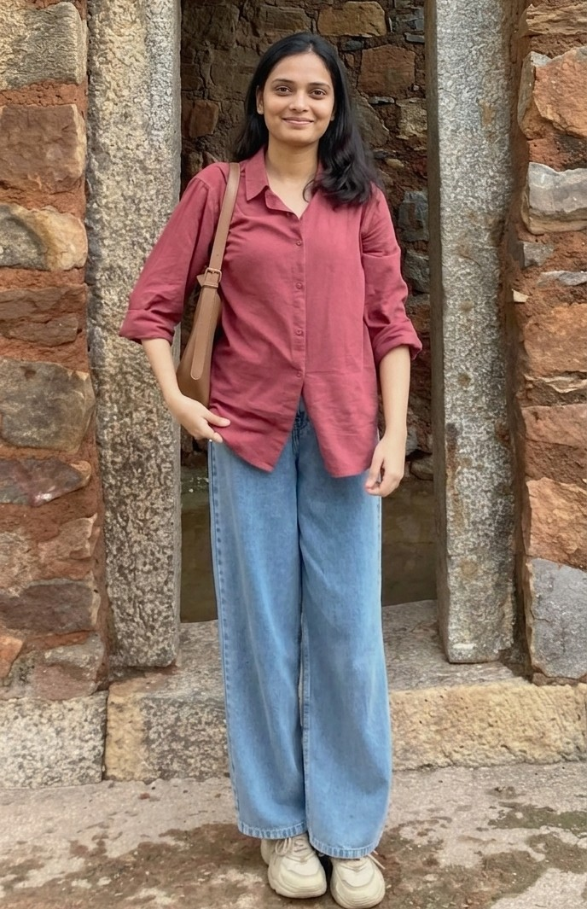

Lali kumari is a Founder & CEO of Lyzonix Technologies | Passionate Web Developer & Tech Enthusiast from Bihar,India
Hello, I’m Lali Kumari, the CEO and Founder of Lyzonix Technologies.
I am from Begusarai, Bihar, India, and I have completed my Bachelor of Science in Chemistry, which has helped me build strong analytical and problem-solving abilities.
I have a strong passion for technology and software development. I have developed skills in HTML, CSS, JavaScript, Node.js, and Firebase, and I enjoy building modern, responsive, and user-friendly websites and applications.
Through my company, Lyzonix Technologies, I am working on turning innovative ideas into real-world digital solutions and continuously improving my technical and entrepreneurial skills.
In the future, I plan to pursue an MBA to strengthen my knowledge in business management and scale my company to a higher level.
I am a dedicated learner who is always open to new challenges, continuous growth, and innovation in the field of technology and business. 🚀

